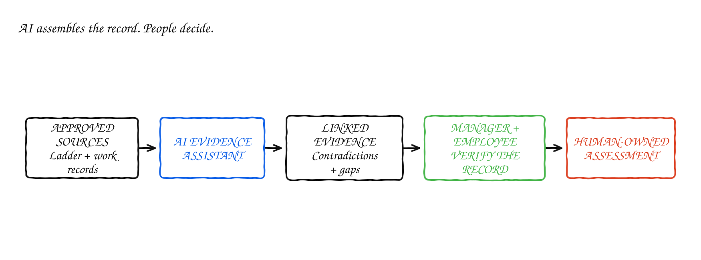
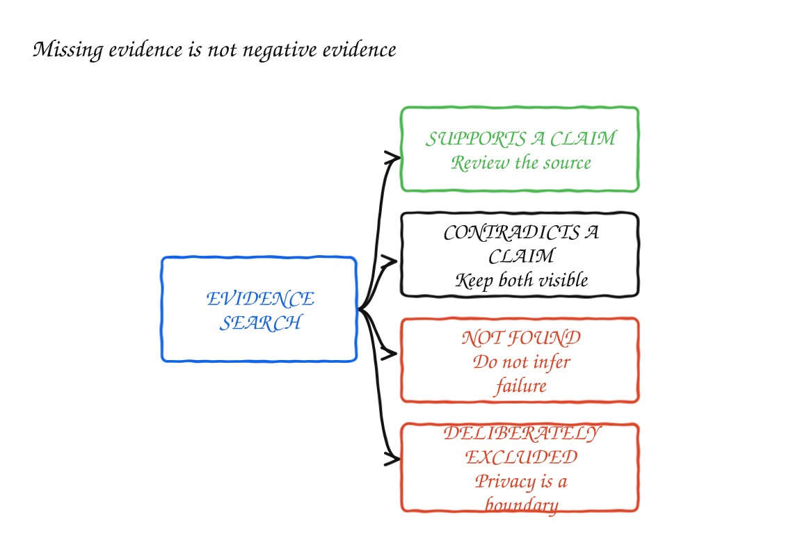

Use AI to Find Evidence, Not Score Engineers
I have managed enough annual reviews to know how unreliable memory becomes over a full year.
The evidence is scattered across project documents, GitHub, Slack, incident records, feedback notes and conversations. Recent problems are easier to remember than quiet contributions. Highly visible work is easier to defend than prevention. A confident self-assessment may surface work that a quieter employee never thinks to mention.
My first reaction was that AI could help. Give it the career ladder, controlled access to the relevant systems and ask it to assemble the evidence I may have forgotten.
The idea became less comfortable once I started thinking about what those systems actually record.
GitHub records activity, not impact. Slack records communication, not collaboration. Neither knows which opportunities someone received, which constraints shaped the work or what happened in conversations it cannot see.
I still think AI can help. I want help finding what I have forgotten. I do not want a system that makes my judgement feel objective enough that I stop questioning it.
I would use AI to find material worth reviewing, never to evaluate the engineer.
Career ladders could become better context
Most career ladders are written as long documents for humans. They describe scope, technical skill, execution, impact, communication and leadership. The language is often broad because it needs to apply across teams.
“Owns features end to end” may be a reasonable expectation for a senior engineer. An AI assistant still needs to know what could support that conclusion, what would be insufficient and which questions require human context.
A machine-readable version of the expectation could contain:
level: senior-engineer
dimension: ownership
expectation: Owns features through rollout, including risks and follow-up.
possible_evidence:
- design decisions and alternatives considered
- delivery milestones and scope changes
- risks raised before they became blockers
- rollout, monitoring and post-release fixes
insufficient_evidence:
- number of commits
- number of Slack messages
- meeting attendance without context
manager_questions:
- Was the engineer given end-to-end ownership?
- How complex and ambiguous was the work?
- Which dependencies were outside their control?The YAML is not the important part. What matters is defining possible evidence, contradictory evidence and limits before looking at an individual. The assistant can find material that may support or weaken an interpretation. It cannot decide what that material proves.
Without that step, the system will treat whatever it can count as performance. Commits become delivery. Messages become communication. Pull-request reviews become mentorship. Availability becomes reliability.
The result will look consistent because every employee went through the same pipeline. Consistently measuring the wrong thing does not make the process fair.
Use AI to find material worth reviewing
In an evidence-based performance process, I already need to collect examples over time, distinguish one incident from a repeated pattern and connect feedback to observable work. AI could reduce the mechanical work of finding that material.
For a review period, an assistant could find:
I would require the same query to look for material that contradicts the initial interpretation, shows a change over time or indicates that the required opportunity was never provided. Otherwise the tool becomes a faster way to build whichever case I already had in mind.
Every claim should link back to its source. The manager and employee should be able to open the pull request, design document or project record and decide whether the interpretation holds.
This is different from asking AI to write a persuasive promotion case. The goal is not to make the employee sound stronger or weaker. It is to recover relevant work with less dependence on memory.

Missing evidence should remain missing
The safest sentence an AI assistant can produce may be:
I found insufficient evidence to assess this expectation.
That does not mean the employee failed to meet it.
An engineer cannot demonstrate cross-team influence if their manager never gives them cross-team scope. A manager cannot show difficult people leadership if their director steps into every difficult conversation. Someone working on prevention may leave fewer visible artefacts than someone repeatedly responding to incidents.
Some important work is deliberately private. Conflict resolution, hiring discussions and support through personal difficulties do not belong in a searchable performance system. Mentoring should appear only when participants deliberately document something appropriate for a career discussion. The absence of private records protects people. It should not quietly reduce someone's assessment.
I would want the tool to distinguish between evidence it found, evidence that points in different directions, evidence it could not find and evidence it was deliberately not allowed to access. None of the last three means the employee failed to meet the expectation.

Collapsing those differences into a score creates false precision. “Not demonstrated” and “not visible to this tool” are not the same conclusion.
Available data is not neutral evidence
GitHub activity is not engineering impact
GitHub provides structured, linkable data, which makes it attractive for automated evaluation. It is also easy to misuse.
Commit counts reward splitting work. Pull-request counts favour smaller changes and can punish engineers working on long investigations. Lines changed reward expansion over simplification. Review counts say nothing about whether the review caught a production risk or added a minor style comment.
Some of the highest-impact engineering work produces little code. An engineer may stop an unnecessary system from being built, find the root cause behind several apparently unrelated failures, simplify a design before implementation or help another team avoid months of work. A count-based model will struggle with all of these.
AI may do better than raw counts because it can inspect the content and surrounding discussion. It still lacks the full system context. It may not know that a small change removed a recurring operational burden, that a large change mostly followed an existing pattern or that the strongest technical decision was choosing not to merge anything.
GitHub is a source of artefacts. It is not a career ladder.
Slack activity is not collaboration
Slack introduces a different bias. It rewards work that is discussed publicly and frequently.
People who think aloud create more searchable evidence. People working in a second language may write less. Time-zone differences affect who participates in live discussions. Some engineers communicate through careful documents, code reviews or scheduled conversations. Others post constantly while creating follow-up work for everyone around them.
A system that treats message volume, response time or reactions as evidence of collaboration will teach people to become more visible. It will not necessarily teach them to collaborate better.
Slack can still contain useful material: a risk raised early, a decision clarified, a dependency unblocked or a written explanation that helped several teams. Those examples matter because they may connect to an outcome, not because the employee produced a message.
Private messages should not be used for performance-evidence retrieval. Performance surveillance should not become the hidden price of asking a colleague for help.
Public does not automatically mean appropriate. People wrote years of ordinary coordination messages without knowing those messages might later become employment evidence. I would exclude private messages completely and avoid searching historical Slack by default. The safer option is to use a Slack thread only when the manager or employee deliberately adds it to the review.
The assistant should challenge the manager too
The most valuable output may be the questions the system asks me before I finalise the review:
An assistant could also compare the manager's draft with the evidence record and flag unsupported statements. If the review says someone “consistently misses deadlines” but the linked record contains one delayed project and several completed commitments, the wording needs examination.
This does not make AI a neutral referee. Its questions come from rules written by people. But it can make the manager's reasoning more inspectable and expose where evidence ends and interpretation begins.
The employee needs a seat in the process
I would not let an employee first encounter the AI-generated record after their rating had been decided.
They should be able to see which sources were used, correct factual errors, add relevant work the system missed and explain constraints that are not visible in the artefacts. If a project changed direction, a dependency failed or the manager reassigned the person's scope, that context belongs next to the evidence.
Employee review is not a veto over difficult feedback. It is a basic accuracy check when a system is assembling claims about someone's career. Corrections should stay attached to the record so the same error does not quietly reappear in the next summary. Where the disagreement is about interpretation rather than fact, both positions should remain visible during human review and calibration.
Before using the system, the organisation should explain which sources can be searched, who can read the result, how long it is retained, how employees correct errors and whether it can be used in formal decisions. If those answers are hidden, the tool will feel like surveillance even when the intention is administrative support.
Stop before the score
It will be tempting to ask the assistant for a level, score or promotion recommendation. The evidence has already been mapped to the ladder, so adding a number feels like the final useful step.
It is the point where the tool crosses from organising evidence into making a consequential judgement it cannot own.
A performance decision includes context that does not reduce cleanly to artefacts: the opportunities available, the difficulty of the work, the employee's response to feedback, changes in scope, team needs and how comparable cases have been treated. Even a strong model cannot be accountable when those inputs are incomplete or the conclusion causes harm.
A numerical output also creates anchoring. Managers may adjust it, but the generated score becomes the starting point. Calibration may turn into a discussion about whether the machine was slightly high or low rather than whether the evidence supports the conclusion at all.
I would prohibit five uses:
Those boundaries may make the tool less impressive. I think they make it safer and more useful.
For any adverse decision, someone should review the underlying sources independently and give the employee a meaningful opportunity to respond. A manager cannot turn generated material into safe evidence merely by making the final decision themselves.
Start smaller than the annual review
The annual performance cycle is the highest-risk place to test a new system. A wrong summary can affect compensation, promotion or someone's continued employment.
A safer first use is preparation for a regular career conversation around one development goal, with every source linked and no evaluative conclusion. I would start with employee-controlled preparation: the engineer asks the tool to find relevant work, reviews the result and decides what to bring into the conversation. This tests retrieval quality before adding the power imbalance of manager-only use.
A later manager preparation flow should carry the same rule: its output must be verified and shared with the employee before it enters any formal assessment.
For example:
Find work from the last three months relevant to end-to-end ownership. Include material that may support progress, material that may contradict it, changes over time and areas where the record is incomplete. Link every source. Do not decide what the material proves, rate the employee or infer motivation.
The employee and manager verify the result together. Both can see what the system missed. The organisation can learn whether the retrieval is accurate, whether some roles leave weaker digital trails and whether the tool changes how career conversations work.
Only after that should the organisation consider broader review support. Privacy, People and legal review belong before deployment, not after the first employee objects. AI will not remove human bias; it will inherit bias from the records, the ladder and the opportunities the organisation created.
I would be comfortable using this to prepare questions for a career conversation. I would not be comfortable receiving a generated performance score, even if the manager promised to review it. AI can help me inspect the evidence and challenge my reasoning. The decision is still mine to make, explain and remain accountable for.